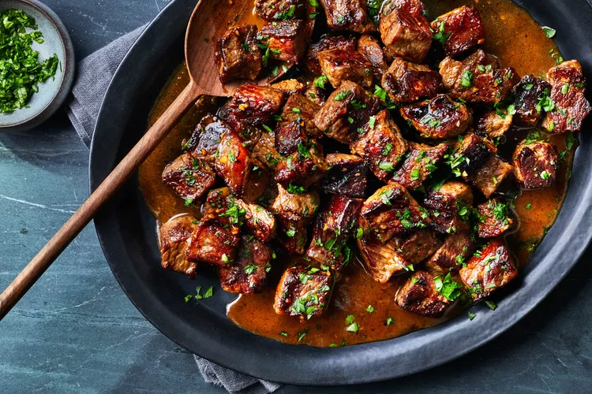
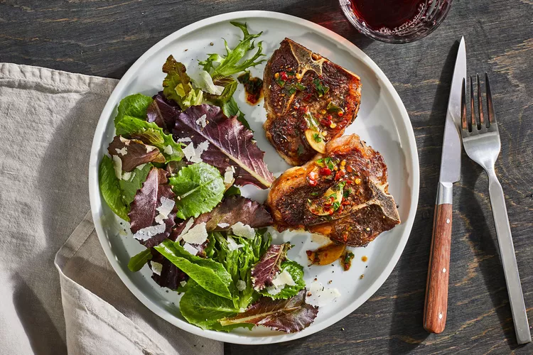
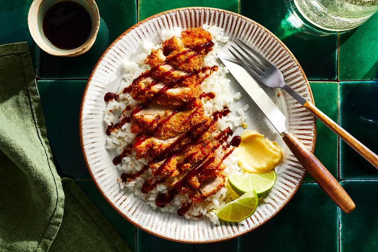
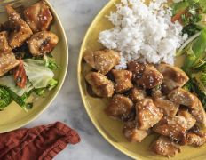

Healthy Foods

Garlic-Butter Steak Bites
- 2 pounds beef strip steak (1-inch thick), cut into 1-inch pieces
- 2 teaspoons kosher salt, divided
- 1 teaspoon black pepper, divided
- 2 tablespoons vegetable oil
- 5 medium garlic cloves, finely chopped (3 tablespoons)

Lamb Chops Sizzled with Garlic
- 1 teaspoon kosher salt, plus more to taste
- 1 teaspoon freshly ground black pepper, plus more to taste
- 1 teaspoon dried thyme
- 3 tablespoons extra-virgin olive oil
- 10 small garlic cloves, halved
- 3 tablespoons water

Chicken Katsu
- Kosher salt
- 1 cup all-purpose flour
- 3 large eggs, lightly beaten with 3 tablespoons of water
- 3 cups panko breadcrumbs
- 3 cups vegetable oil, divided
- Dijon mustard, for serving

Sesame Chicken
- boneless skinless chicken breast halves, pat dry with paper towels
- 1/2 cup honey
- 1/2 cup low sodium soy sauce
- 1 cup water
- 2 tablespoons cornstarch
- 1/2 - 1 teaspoon ground ginger (fresh is better)